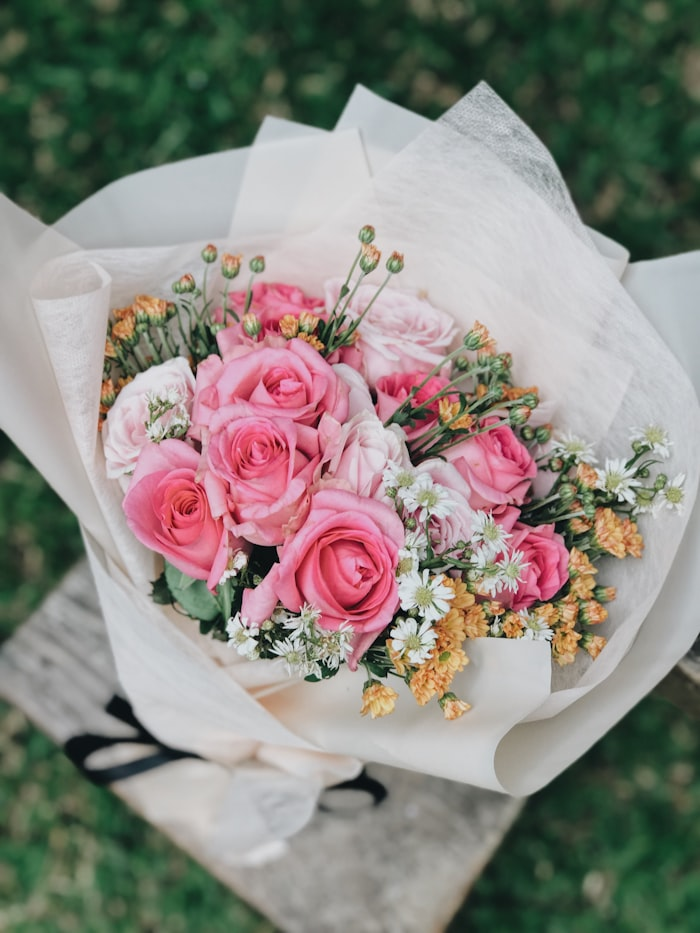
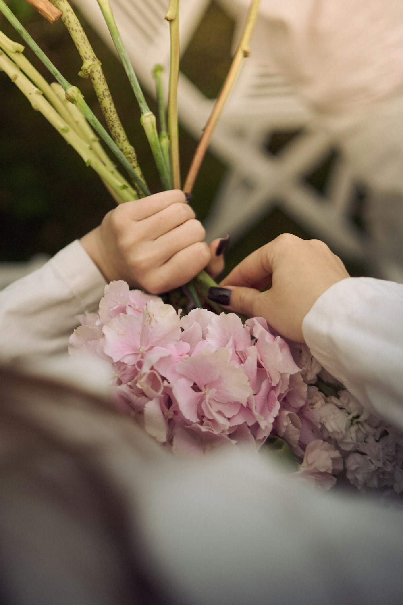
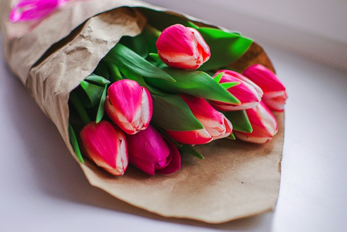
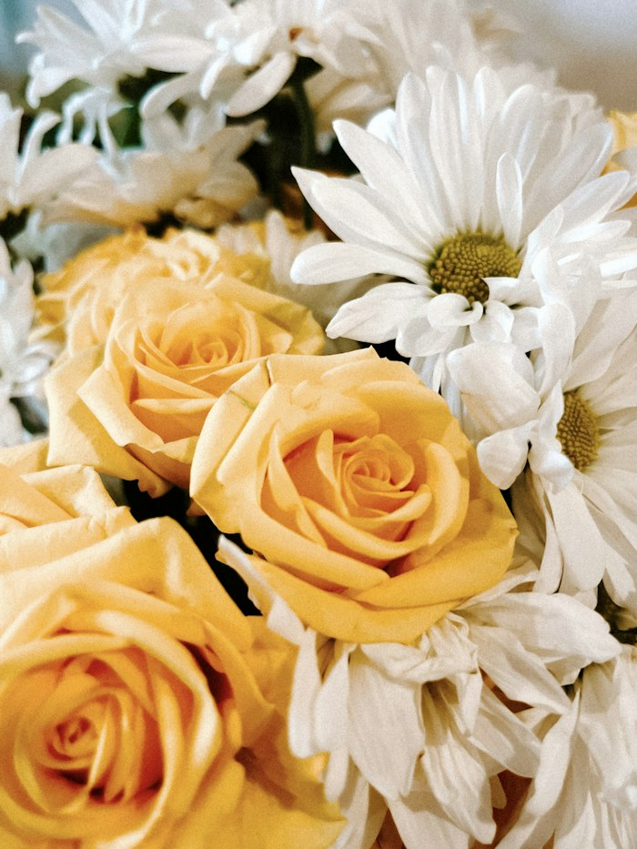
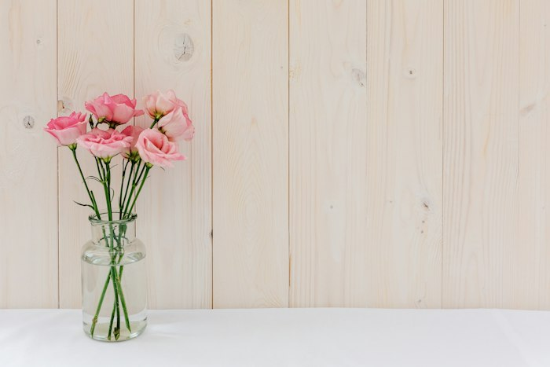
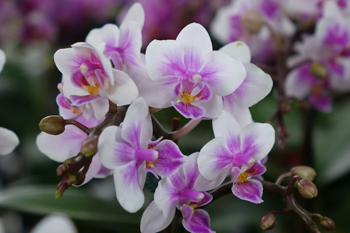
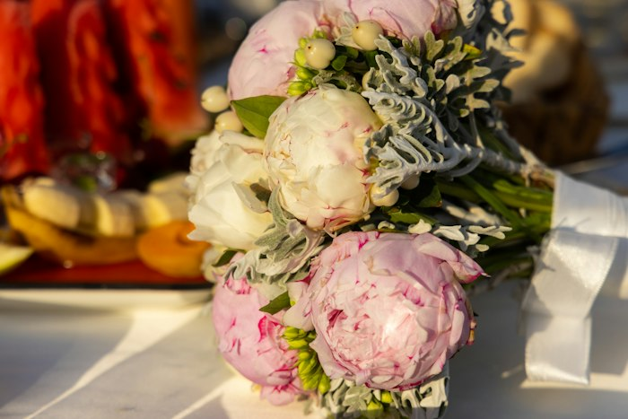
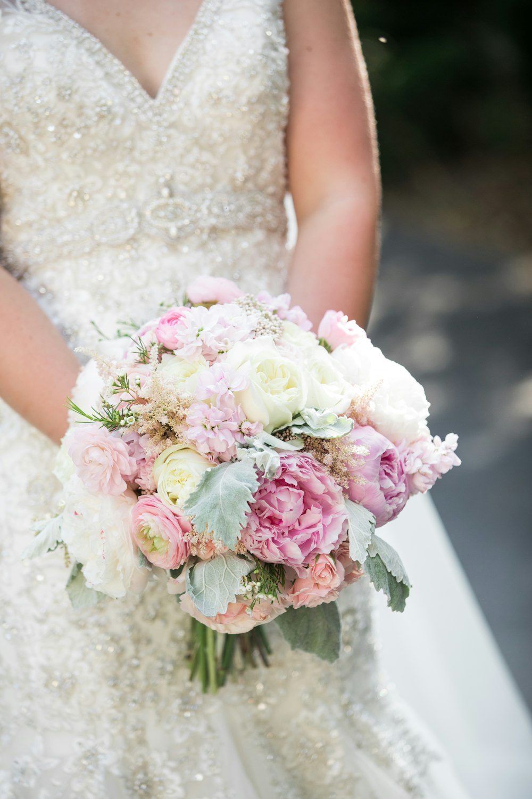
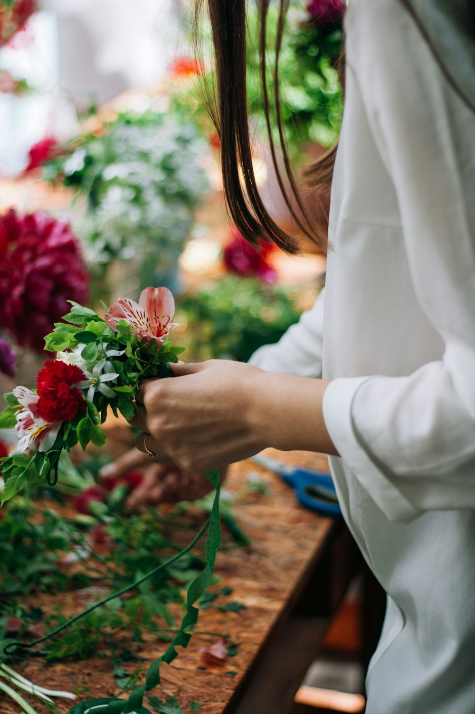
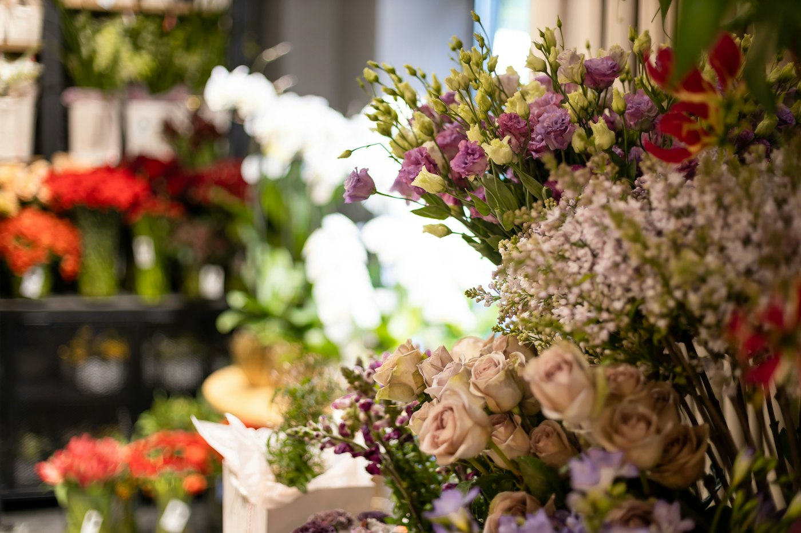

Ramos
Ramo Clásico de Rosas
Rosas y flores de temporada envueltas a mano — el favorito para decir "gracias" o "te quiero".
Diseño floral premium para regalar, decorar y hacer que alguien "catch" un sentimiento. Ramos hechos a mano con flores de temporada, entregados el mismo día.

Catch Flower Studio nació en 2021 en Metepec como un estudio floral pensado para algo muy simple: que un ramo diga lo que a veces cuesta decir con palabras. El nombre no es casualidad — "catch", como en catch feelings, esa sensación de que algo — o alguien — te atrapó sin avisar. Así queremos que se sientan nuestras flores.
Trabajamos con flores premium de temporada y diseñamos cada pieza a mano, desde nuestro local de fachada verde salvia en la Plazuela de San Francisco, en Metepec — un rincón que ya reconocen quienes nos siguen en Instagram.
Una probada de nuestros ramos y arreglos más queridos. Cada pieza se arma con la selección de flores frescas del día — el diseño puede variar ligeramente según temporada y disponibilidad.

Rosas y flores de temporada envueltas a mano — el favorito para decir "gracias" o "te quiero".

Selección de las flores más frescas del momento — el diseño varía según lo que llega esa semana.

Rosas amarillas y margaritas para alegrar cualquier ocasión — ideal para cumpleaños.

Listo para colocar, sin necesidad de jarrón propio — perfecto para oficina, mesa o recepción.

Un regalo que dura semanas — ideal para mamá, para agradecer o para decorar el hogar.

Peonías y flores blancas en tonos suaves — una de nuestras piezas más elegantes.
Además de nuestro catálogo del día a día, diseñamos piezas a la medida para las ocasiones que lo ameritan.

Ramos de novia y flores para todo el cortejo, diseñados a la medida de la paleta y el estilo de tu boda.
Cotiza tu ramo de novia →
Diseño floral para bodas, eventos sociales y corporativos — desde centros de mesa hasta instalaciones completas.
Agenda tu evento →
San Valentín, Día de las Madres, aniversarios o "solo porque sí" — diseñamos según color, presupuesto y ocasión.
Cuéntanos qué buscas →Reseñas reales compartidas por clientes en Facebook.
"Excelente servicio para el 10 de mayo. Me ayudaron a que la entrega fuera exactamente a la hora que la necesitaba, muy buena atención y las flores de excelente calidad."
"Les recomiendo al 100% — Catch, envío puntual, pago seguro. Compré una orquídea para mi mamá y quedó fascinada."
Plazuela de San Francisco 101, San Francisco Coaxusco, 52158 Metepec, Edo. Méx.
Horario por confirmar — escríbenos por WhatsApp y te decimos al momento si estamos abiertos.
Entregamos en Metepec, Toluca y alrededores.
La forma más rápida de pedir con nosotros es por WhatsApp — te confirmamos disponibilidad, precio y hora de entrega el mismo día.